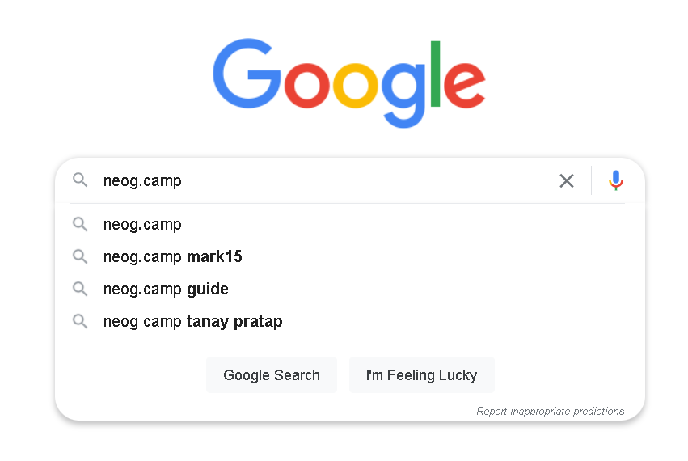
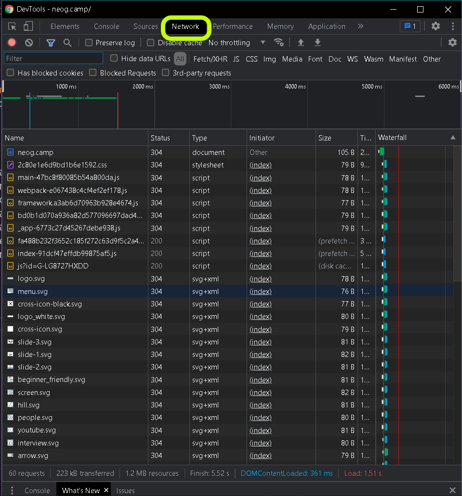

When we search on google for a website neog.camp for instance the browser sends requests to the server and documents, style-sheets, javascript files, fonts are downloaded. And for each request there are multiple HTTP Headers which according to the MDN Web Docs let the client and the server pass additional information with an HTTP request or response. Here I will explain different Status Codes that will appear when a request is made to the server.
We can see what requests are sent, by checking the Inspect Network Tab which is opened by right-clicking mouse button and seclect "Inspect", and then opening "Network" tab as you can see in the image below. Now when the name of the website is entered and we press the search button, multiple requests are registered and we can see them on the display, along with the name of the request Status Codes can be seen.
We encountered 2xx and 3xx category codes what they mean is:
To read about other Status Codes refer the Docs Here